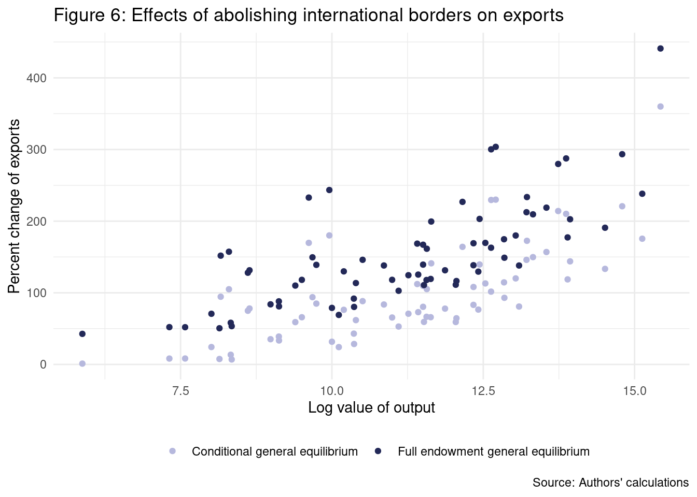

Chapter 3 General equilibrium trade policy analysis with structural gravity
3.1 Trade without borders
3.1.1 Initial data
Unlike the previous chapter, we shall proceed by alternating both data transforming and regressions. In the previous chapter, it was possible first to process the datasets and then fit the regressions, but here we need the regressions’ output to create new variables. In any case, we will follow quite similar steps to the last chapter.
To do what is shown in box #1 from page 104 in Yotov et al. (2016), we need to convert “DEU” in both exporter and importer columns to “0-DEU” so that the software sets it as the reference factor (i.e., “0-DEU” will be listed before any text string starting with a letter). The book uses “ZZZ,” but in R, “ZZZ” will not be treated as the reference factor, for which case we could have used “AAA.” It is important to mention that box #1 does not show a previous step to filter observations for 2006, which is mentioned on page 103.
It is imperative to arrange the table by importers. Otherwise, there is a difference in the estimated fixed effects that changes the factory prices in the last figure from this section, and here the aim is to fully replicate the two figures from this section in the book. We mentioned this in the RTA effects section from the previous chapter.
ch2_application1 <- agtpa_applications %>%
select(exporter, importer, pair_id, year, trade, dist, cntg, lang, clny) %>%
filter(year == 2006) %>%
mutate(
log_dist = log(dist),
intl = ifelse(exporter != importer, 1, 0),
exporter = ifelse(exporter == "DEU", "0-DEU", exporter),
importer = ifelse(importer == "DEU", "0-DEU", importer)
) %>%
arrange(importer) %>%
# Create Yit
group_by(exporter) %>%
mutate(y = sum(trade)) %>%
# Create Eit
group_by(importer) %>%
mutate(e = sum(trade)) %>%
# Create Er
ungroup() %>%
mutate(e_r = max(ifelse(importer == "0-DEU", e, NA), na.rm = T))3.1.2 Step I: Solve the baseline model
We start by fitting the model
\[ \begin{align} X_{ij,t} =& \:\exp\left[\pi_{i,t} + \chi_{i,t} + \beta_1 \log(DIST)_{i,j} + \beta_2 CNTG_{i,j} + \beta_3 INTL_{i,j}\right] \times \varepsilon_{ij,t}. \end{align} \]
With the data from above, the model specification is straightforward.
fit_baseline_app1 <- fepois(
trade ~ log_dist + cntg + intl | exporter + importer,
data = ch2_application1,
glm.iter = 500
)With the estimated model, we can proceed as in box #1 from page 105 in Yotov et al. (2016) to construct the variables for exporter and importer fixed effects. This step is very different compared to Stata.
ch2_application1 <- ch2_application1 %>%
mutate(
fe_exporter_bln = fixef(fit_baseline_app1)$exporter[exporter],
fe_importer_bln = fixef(fit_baseline_app1)$importer[importer]
)Still following box #1, we need to compute the variables of bilateral trade costs and multilateral resistances.
ch2_application1 <- ch2_application1 %>%
mutate(
tij_bln = exp(fit_baseline_app1$coefficients["log_dist"] * log_dist +
fit_baseline_app1$coefficients["cntg"] * cntg +
fit_baseline_app1$coefficients["intl"] * intl),
# outward multilateral resistance (omr)
omr_bln = y * (e_r / exp(fe_exporter_bln)),
# inward multilateral resistance (imr)
imr_bln = e / (exp(fe_importer_bln) * e_r)
)To complete this estimation stage, we need to create a column with the estimated international trade for given output and expenditures. We start by adding a column with the estimated trade for the baseline model, and then we group by the exporter and summarise to obtain the required column \(\xi\)-baseline.
ch2_application1 <- ch2_application1 %>%
# mutate(tradehat_bln = predict(fit_baseline_app1, ch2_application1, "response")) %>%
mutate(tradehat_bln = predict(fit_baseline_app1, ch2_application1)) %>%
group_by(exporter) %>%
mutate(xi_bln = sum(tradehat_bln * (exporter != importer))) %>%
ungroup()3.1.3 Step II: Define a counterfactual scenario
Box #2 from page 105 in Yotov et al. (2016) proposes two alternatives to define the counterfactual scenario of removing international borders. The first alternative is to eliminate the border variable and generate the logged trade costs used in the constraint.
ch2_application1 <- ch2_application1 %>%
mutate(
tij_cfl = exp(fit_baseline_app1$coefficients["log_dist"] * log_dist +
fit_baseline_app1$coefficients["cntg"] * cntg)
)The second alternative is to define a new counterfactual border variable. We only show this equivalent case without computation.
ch2_application1 <- ch2_application1 %>%
mutate(
intl_cfl = 0,
tij_bln = exp(fit_baseline_app1$coefficients["log_dist"] * log_dist +
fit_baseline_app1$coefficients["cntg"] * cntg +
fit_baseline_app1$coefficients["intl"] * intl_cfl)
)3.1.4 Step III: Solve the counterfactual model
We need to fit a model similar to the model from step I, the constrained gravity model, where \(\pi_{j,t}\) and \(\chi_{j,t}\) are altered as in the equation
\[ \begin{align} X_{ij,t} =& \:\exp\left[\pi_{i,t}^{CFL} + \chi_{i,t}^{CFL} + \beta_1 \log(DIST)_{i,j} + \beta_2 CNTG_{i,j} + \beta_3 INTL_{i,j}\right] \times \varepsilon_{ij,t}. \end{align} \]
Box #1 from page 106 in Yotov et al. (2016) estimates the constrained gravity model with the PPML estimator using an offset argument, which is straightforward in R.
fit_counterfactual_app1 <- fepois(
trade ~ 0 | exporter + importer,
data = ch2_application1,
offset = ~log(tij_cfl),
glm.iter = 500
)As in the previous chapter, we need to extract the fixed effects.
ch2_application1 <- ch2_application1 %>%
mutate(
fe_exporter_cfl = fixef(fit_counterfactual_app1)$exporter[exporter],
fe_importer_cfl = fixef(fit_counterfactual_app1)$importer[importer]
)Now we go for Box #2 from page 106 in Yotov et al. (2016), where the authors obtain the bilateral trade costs and multilateral resistances variables.
ch2_application1 <- ch2_application1 %>%
mutate(
# outward multilateral resistance (omr)
omr_cfl = y * (e_r / exp(fe_exporter_cfl)),
# inward multilateral resistance (imr)
imr_cfl = e / (exp(fe_importer_cfl) * e_r)
)Box #2 also shows how to compute trade’s conditional general equilibrium effects, similar to what we did in step I.
ch2_application1 <- ch2_application1 %>%
# mutate(tradehat_cfl = predict(fit_counterfactual_app1, ch2_application1, "response")) %>%
mutate(tradehat_cfl = predict(fit_counterfactual_app1, ch2_application1)) %>%
group_by(exporter) %>%
mutate(xi_cfl = sum(tradehat_cfl * (exporter != importer))) %>%
ungroup()Box #1 from page 107 in Yotov et al. (2016) can be simplified with R code. To construct the iterative procedure to converge to full endowment general equilibrium effects, we start by creating the required columns and parameters so that we will deviate from the original approach.
We start computing the change in bilateral trade costs (changes in \(t_{ij}\)) and trade deficit or surplus (\(phi\)). The value for the elasticity of substitution, \(\sigma = 7\), used to set the convergence criteria is taken from the literature. There is an explanation in the original Stata code.
sigma <- 7
ch2_application1 <- ch2_application1 %>%
mutate(
change_tij = tij_cfl / tij_bln,
phi = ifelse(importer == exporter, e / y, 0)
) %>%
group_by(exporter) %>%
mutate(phi = max(phi)) %>%
ungroup()We compute the change in prices for exporters (changes in \(p_i\)) and importers (changes in \(p_j\)).
ch2_application1 <- ch2_application1 %>%
group_by(exporter) %>%
mutate(change_p_i = ((exp(fe_exporter_cfl) / e_r) / (exp(fe_exporter_bln) / e_r))^(1 /(1 - sigma))) %>%
ungroup() %>%
group_by(importer) %>%
mutate(
change_p_j = ifelse(importer == exporter, change_p_i, 0),
change_p_j = max(change_p_j)
) %>%
ungroup()Next, we need to compute the counterfactual trade flows.
ch2_application1 <- ch2_application1 %>%
mutate(trade_cfl = tradehat_cfl * change_p_i * change_p_j)To conclude the steps from Box #1 we need a while() loop and iterate until convergence is reached. We need to duplicate some columns under new names for the loop operations because we will overwrite them using the iterative steps.
ch2_application1 <- ch2_application1 %>%
mutate(
omr_cfl_0 = omr_cfl,
imr_cfl_0 = imr_cfl,
change_imr_full_0 = 1,
change_omr_full_0 = 1,
change_p_i_0 = change_p_i,
change_p_j_0 = change_p_j,
fe_exporter_cfl_0 = fe_exporter_cfl,
fe_importer_cfl_0 = fe_importer_cfl,
tradehat_0 = tradehat_cfl,
e_r_cfl_0 = e_r
)We run the loop, which cannot be divided into smaller pieces because the step \(N\) depends on the step \(N-1\). As in the previous application, the idea is for the stopping criteria in this iteration is that the model converges when prices stop changing.
# set parameters
max_dif <- 1
sd_dif <- 1
change_price_i_old <- 0
i <- 1
while(sd_dif > 1e-5 | max_dif > 1e-5) {
ch2_application1 <- ch2_application1 %>%
mutate(trade_1 = tradehat_0 * change_p_i_0 * change_p_j_0 / (change_omr_full_0 * change_imr_full_0))
# repeat the counterfactual model
fit_counterfactual_app1_2 <- fepois(
trade_1 ~ 0 | exporter + importer,
data = ch2_application1,
offset = ~log(tij_cfl),
glm.iter = 500
)
ch2_application1 <- ch2_application1 %>%
mutate(
fe_exporter_cfl_1 = fixef(fit_counterfactual_app1_2)$exporter[exporter],
fe_importer_cfl_1 = fixef(fit_counterfactual_app1_2)$importer[importer]
)
# compute the conditional general equilibrium effects of trade
ch2_application1 <- ch2_application1 %>%
mutate(tradehat_1 = predict(fit_counterfactual_app1_2, ch2_application1)) %>%
group_by(exporter) %>%
mutate(y_cfl_1 = sum(tradehat_1)) %>%
ungroup() %>%
mutate(e_cfl_1 = ifelse(importer == exporter, phi * y_cfl_1, 0)) %>%
group_by(importer) %>%
mutate(e_cfl_1 = max(e_cfl_1)) %>%
ungroup() %>%
mutate(
e_r_cfl_1 = ifelse(importer == "0-DEU", e_cfl_1, 0),
e_r_cfl_1 = max(e_r_cfl_1)
)
# compute the change in prices for exporters and importers
ch2_application1 <- ch2_application1 %>%
mutate(change_p_i_1 = ((exp(fe_exporter_cfl_1) / e_r_cfl_1) /
(exp(fe_exporter_cfl_0) / e_r_cfl_0))^(1 / (1 - sigma)))
# compute the change in prices for exporters and importers
ch2_application1 <- ch2_application1 %>%
group_by(importer) %>%
mutate(
change_p_j_1 = ifelse(importer == exporter, change_p_i_1, 0),
change_p_j_1 = max(change_p_j_1)
) %>%
ungroup()
# compute both outward and inward multilateral resistance
ch2_application1 <- ch2_application1 %>%
mutate(
omr_cfl_1 = (y_cfl_1 * e_r_cfl_1) / exp(fe_exporter_cfl_1),
imr_cfl_1 = e_cfl_1 / (exp(fe_importer_cfl_1) * e_r_cfl_1)
)
# update the differences
max_dif <- abs(max(ch2_application1$change_p_i_0 - change_price_i_old))
sd_dif <- sd(ch2_application1$change_p_i_0 - change_price_i_old)
change_price_i_old <- ch2_application1$change_p_i_0
# compute changes in outward and inward multilateral resistance
ch2_application1 <- ch2_application1 %>%
mutate(
change_omr_full_1 = omr_cfl_1 / omr_cfl_0,
change_imr_full_1 = imr_cfl_1 / imr_cfl_0,
omr_cfl_0 = omr_cfl_1,
imr_cfl_0 = imr_cfl_1,
change_omr_full_0 = change_omr_full_1,
change_imr_full_0 = change_imr_full_1,
change_p_i_0 = change_p_i_1,
change_p_j_0 = change_p_j_1,
fe_exporter_cfl_0 = fe_exporter_cfl_1,
fe_importer_cfl_0 = fe_importer_cfl_1,
tradehat_0 = tradehat_1,
e_r_cfl_0 = e_r_cfl_1
) %>%
select(-c(fe_exporter_cfl_1, fe_importer_cfl_1))
i <- i + 1
}In the previous step, we obtained a warning that we cannot eliminate by increasing GLM interations. The fitted model has truncated deviance for steps eight and twenty-two in the while loop. We tested with 20,000 GLM iterations for each step, resulting in a very similar message:
Warning: Absence of convergence: Maximum number of iterations reached (20000). Final deviance: 3.725e-8. Warning: Absence of convergence: Maximum number of iterations reached (20000). Final deviance: -4.47e-8.
This is not a problem by itself, and we can disregard this. A very different case would be estimating a model with high collinearity, resulting in coefficients with undefined standard errors and an unreliable result.
Box #1 from page 108 in Yotov et al. (2016) shows the steps to obtain different endowments, which can be divided into smaller pieces. We start computing the full endowment general equilibrium of factory-gate price (changes in \(p_i^{full}\) and \(p_j^{full}\)) and the full endowment general equilibrium of output (\(y^{full}\)).
ch2_application1 <- ch2_application1 %>%
mutate(
change_p_i_full = ((exp(fe_exporter_cfl_0) / e_r_cfl_0) /
(exp(fe_exporter_bln) / e_r))^(1 / (1 - sigma)),
change_p_j_full = change_p_i_full * (exporter == importer)
) %>%
group_by(importer) %>%
mutate(change_p_j_full = max(change_p_j_full)) %>%
ungroup() %>%
mutate(y_full = change_p_i_full * y)We compute the full endowment general equilibrium of aggregate expenditures (\(e^{full}\) and \(e_r^{full}\)).
ch2_application1 <- ch2_application1 %>%
mutate(e_full = change_p_j_full * e * (exporter == importer)) %>%
group_by(importer) %>%
mutate(e_full = max(e_full, na.rm = TRUE)) %>%
ungroup() %>%
mutate(
e_full_r = e_full * (importer == "0-DEU"),
e_full_r = max(e_full_r)
)With the aggregate expenditure, we proceed to obtain the full endowment general equilibrium of the outward multilateral resistance (\(OMR^{full}\)) and inward multilateral resistance (\(IMR^{full}\)).
ch2_application1 <- ch2_application1 %>%
mutate(
omr_full = y_full * e_r_cfl_0 / exp(fe_exporter_cfl_0),
imr_full = e_full / (exp(fe_importer_cfl_0) * e_full_r)
)Finally, we proceed to compute the full endowment general equilibrium of trade (\(\xi^{full}\)).
ch2_application1 <- ch2_application1 %>%
mutate(x_full = (y_full * e_full * tij_cfl) / (imr_full * omr_full)) %>%
group_by(exporter) %>%
mutate(xi_full = sum(x_full * (importer != exporter))) %>%
ungroup()3.1.5 Step IV: Collect, construct, and report indexes of interest
Box #1 from page 108 in Yotov et al. (2016) consists of constructing the percentage change of the general equilibrium indexes. The steps are direct. We need to compute the change in full endowment general equilibrium factory-gate price on the export side (changes in \(p_i{full}\)), the change in conditional and full general equilibrium outward multilateral resistances (changes in \(OMR^{CFL}\) and \(OMR^{full}\)), and the change in conditional and full general equilibrium international trade (changes in \(\xi^{CFL}\) and \(\xi^{full}\)).
ch2_application1 <- ch2_application1 %>%
mutate(
change_price_full = (change_p_i_full - 1) * 100,
change_omr_cfl = (omr_cfl^(1 / (1 - sigma)) / omr_bln^(1 / (1 - sigma)) - 1) * 100,
change_omr_full = (omr_full^(1 / (1 - sigma)) / omr_bln^(1 / (1 - sigma)) - 1) * 100,
change_xi_cfl = (xi_cfl / xi_bln - 1) * 100,
change_xi_full = (xi_full / xi_bln - 1) * 100
)We also need to do something very similar for the importers in order to be able to recreate figure 7 later.
ch2_application1 <- ch2_application1 %>%
mutate(
change_imr_full = -(imr_full^(1 / (1 - sigma)) / imr_bln^(1 / (1 - sigma)) - 1) * 100,
rgdp = ((y_full / imr_full^(1 / (1 - sigma))) / (y / imr_bln^(1 / (1 - sigma))) - 1) * 100
)3.1.6 Figures replication
With all of the steps above, we are ready to create the plots from page 110. in Yotov et al. (2016). Figure 6 removes the observations where both the importer and the exporter are different, and this can be seen in the original Stata code provided with the book.
We need to filter rows and to obtain \(\log(y)\).
ch2_application1 <- ch2_application1 %>%
filter(exporter == importer) %>%
select(exporter, importer, y, change_xi_cfl, change_xi_full, rgdp,
change_price_full, change_imr_full) %>%
mutate(log_y = log(y))In addition, the original code removes Hong Kong for visualization scale purposes.
data_figure_6 <- ch2_application1 %>%
filter(exporter != "HKG") %>%
select(x = log_y, change_xi_cfl, change_xi_full) %>%
pivot_longer(names_to = "change", values_to = "y", -x) %>%
mutate(
change = case_when(
change == "change_xi_cfl" ~ "Conditional general equilibrium",
TRUE ~ "Full endowment general equilibrium"
)
)
ggplot(data = data_figure_6) +
geom_point(aes(x = x, y = y, color = change)) +
labs(
x = "Log value of output",
y = "Percent change of exports",
title = "Figure 6: Effects of abolishing international borders on exports",
caption = "Source: Authors' calculations",
color = ""
) +
theme_minimal() +
theme(legend.position = "bottom") +
scale_color_manual(values = c("#b6b8dd","#232958"))
To create Figure 7, we proceed in the same way as Figure 6.
data_figure_7 <- ch2_application1 %>%
filter(exporter != "HKG") %>%
select(x = log_y, change_imr_full, change_price_full, rgdp) %>%
pivot_longer(names_to = "change", values_to = "y", -x) %>%
mutate(
change = case_when(
change == "change_imr_full" ~ "-(inward multilateral resistances)",
change == "change_price_full" ~ "Factory-gate price",
TRUE ~ "Real GDP"
)
)
ggplot(data = data_figure_7) +
geom_point(aes(x = x, y = y, color = change)) +
labs(
x = "Log value of output",
y = "Percent changes",
title = "Figure 7: Effects of abolishing international borders on real GDP",
caption = "Note: The inward multilateral resistances have been reformulated by multiplying their value by minus one.\nSource: Authors' calculations",
color = ""
) +
theme_minimal() +
theme(legend.position = "bottom") +
scale_color_manual(values = c("#3bade3", "#b6b8dd", "#232958"))3.2 Impact of regional trade agreements
3.2.1 Initial data
As in the previous application, we shall proceed by alternating both data transforming and regressions. To replicate the results from box #1 on page 112 in Yotov et al. (2016), we need to convert “DEU” in both exporter and importer columns to “0-DEU”, as in the previous section.
However, in this case, we shall keep the panel dimension of the dataset to identify the effects of RTAs and comprehensively capture the impact of all time-invariant trade costs with the use of pair fixed effects.
ch2_application2 <- agtpa_applications %>%
select(exporter, importer, pair_id, year, trade, dist, cntg, lang, clny, rta) %>%
filter(year %in% seq(1986, 2006, 4)) %>%
mutate(
log_dist = log(dist),
intl = ifelse(exporter != importer, 1, 0),
exporter = ifelse(exporter == "DEU", "0-DEU", exporter),
importer = ifelse(importer == "DEU", "0-DEU", importer)
) %>%
# Create Yit
group_by(exporter, year) %>%
mutate(y = sum(trade)) %>%
# Create Eit
group_by(importer, year) %>%
mutate(e = sum(trade)) %>%
# Create Er
group_by(year) %>%
mutate(e_r = max(ifelse(importer == "0-DEU", e, NA), na.rm = T)) %>%
arrange(importer)Because of the panel dimension, we proceed as we did in the previous chapter by creating columns to combine exporter/importer and year alongside a pairing variable for the internal dyads for the fixed effects.
ch2_application2 <- ch2_application2 %>%
mutate(
exp_year = paste0(exporter, year),
imp_year = paste0(importer, year),
pair_id_2 = ifelse(exporter == importer, "0-intra", pair_id)
)In addition, we need to compute the trade sum to filter the cases where the sum by dyad is zero.
ch2_application2 <- ch2_application2 %>%
group_by(pair_id) %>%
mutate(sum_trade = sum(trade)) %>%
ungroup()3.2.2 Step 1: Solve the baseline gravity model
3.2.2.1 Stage 1: Obtain the estimates of pair fixed effects and the effects of RTAs
With the steps done before, it is straightforward to obtain the PPML regression shown in box #1 from page 112 in Yotov et al. (2016).
fit_baseline_app2 <- fepois(
trade ~ rta | exp_year + imp_year + pair_id_2,
data = filter(ch2_application2, sum_trade > 0),
glm.iter = 500
)We can construct the variables for exporter-time, importer-time, and internal dyads with the estimated fixed effects from the model.
ch2_application2 <- ch2_application2 %>%
mutate(
fe_exporter_bln = fixef(fit_baseline_app2)$exp_year[exp_year],
fe_importer_bln = fixef(fit_baseline_app2)$imp_year[imp_year],
fe_pair_id_2_bln = fixef(fit_baseline_app2)$pair_id_2[pair_id_2]
)3.2.2.2 Stage 2: Regress the estimates of pair fixed effects on gravity variables and country fixed effects
Box #1 from page 113 in Yotov et al. (2016) can be divided into smaller chunks. We start by filtering to keep the observation from 1994, and then we compute the trade costs (\(\bar{t}_{ij}\) and \(t_{ij}^{BLN}\)) from the internal dyads fixed effects and the estimated RTA coefficient.
ch2_application2 <- ch2_application2 %>%
mutate(
tij_bar = exp(fe_pair_id_2_bln),
tij_bln = exp(fe_pair_id_2_bln + fit_baseline_app2$coefficients["rta"] * rta)
)We need to create a table for the year 1994, which we will use to predict the trade costs for the observations with zero trade flows. The reason to create a sub-table, instead of filtering observations in the regression function, is that it eases posterior work to predict the costs.
ch2_application2_1994 <- ch2_application2 %>%
filter(year == 1994, exporter != importer)Now, unlike the book, which duplicates \(\overline{t_{ij}}\) by creating \(t_{ij}\), we can fit a regression to estimate the costs. This is something that emerges from the small differences between expressing an idea in Stata or R.
fit_costs_app2 <- fepois(
tij_bar ~ log_dist + cntg + lang + clny | exporter + importer,
data = ch2_application2_1994,
glm.iter = 500
)With the regression, we add the fitted values to the sub-table.
ch2_application2_1994 <- ch2_application2_1994 %>%
mutate(tij_no_rta = predict(fit_costs_app2, ch2_application2_1994)) %>%
select(exporter, importer, tij_no_rta)The final step is to keep the observations for the year 1994 in the original table and replace the missing costs with the predicted values.
ch2_application2 <- ch2_application2 %>%
filter(year == 1994) %>%
left_join(ch2_application2_1994, by = c("exporter", "importer")) %>%
mutate(
tij_bar = ifelse(is.na(tij_bar), tij_no_rta, tij_bar),
tij_bln = ifelse(is.na(tij_bln), tij_bar * exp(fit_baseline_app2$coefficients["rta"] * rta), tij_bln)
) %>%
select(-tij_no_rta)Box #2 from page 113 in Yotov et al. (2016) is easier to replicate. The first part of completing Box #2 involves solving the constrained baseline gravity model.
fit_constrained_app2 <- fepois(
trade ~ 0 | exporter + importer,
data = ch2_application2,
offset = ~log(tij_bln),
glm.iter = 500
)With the fitted model, we can add the prediction and the \(\xi^{BLN}\) column.
ch2_application2 <- ch2_application2 %>%
mutate(tradehat_bln = predict(fit_constrained_app2, ch2_application2)) %>%
group_by(exporter) %>%
mutate(xi_bln = sum(tradehat_bln * (exporter != importer))) %>%
ungroup()The book specifies that all other baseline indexes of interest can be obtained by applying the same procedure described in the previous application. Here we will obtain the multilateral resistances terms (\(OMR^{BLN}\) and \(IMR^{BLN}\)) by adding the fixed effects from the constrained model to the data.
ch2_application2 <- ch2_application2 %>%
mutate(
fe_exporter_cns = fixef(fit_constrained_app2)$exporter[exporter],
fe_importer_cns = fixef(fit_constrained_app2)$importer[importer]
)
ch2_application2 <- ch2_application2 %>%
mutate(
omr_bln = y * e_r/ exp(fe_exporter_cns),
imr_bln = e / (exp(fe_importer_cns) * e_r)
)3.2.3 Step II: Define a counterfactual scenario
Box #1 from page 114 in Yotov et al. (2016) is direct and consists in replacing the RTA values by zero if the pairs of countries are NAFTA members.
nafta <- c("MEX", "USA", "CAN")
ch2_application2 <- ch2_application2 %>%
mutate(
rta_no_nafta = ifelse(exporter %in% nafta & importer %in% nafta, 0, rta),
tij_cfl = tij_bar * exp(fit_baseline_app2$coefficients["rta"] * rta_no_nafta)
)3.2.4 Step III: Solve the counterfactual model
The same procedure from the previous section applies to obtain the conditional general equilibrium effects and then compute the full endowment general equilibrium effects. We start by fitting a counterfactual model.
fit_counterfactual_app2 <- fepois(
trade ~ 0 | exporter + importer,
data = ch2_application2,
offset = ~log(tij_cfl),
glm.iter = 500
)With the fitted model we add the fixed effects.
ch2_application2 <- ch2_application2 %>%
mutate(
fe_exporter_cfl = fixef(fit_counterfactual_app2)$exporter[exporter],
fe_importer_cfl = fixef(fit_counterfactual_app2)$importer[importer]
)As we did in stage 2, we compute the multilateral resistance terms.
ch2_application2 <- ch2_application2 %>%
mutate(
omr_cfl = y * e_r / exp(fe_exporter_cfl),
imr_cfl = e / (exp(fe_importer_cfl) * e_r)
)Up to this point, we are ready to compute the conditional general equilibrium effects of trade.
ch2_application2 <- ch2_application2 %>%
mutate(tradehat_cfl = predict(fit_counterfactual_app2, ch2_application2)) %>%
group_by(exporter) %>%
mutate(xi_cfl = sum(tradehat_cfl * (exporter != importer))) %>%
ungroup()Now we are going to compute the full endowment general equilibrium effects. We start by repeating the steps to obtain changes in \(t_{ij}\) \(\phi\) from the last section. As the notes in the original Stata code say, the criteria of convergence (\(\sigma = 7\)) was taken from the literature.
sigma <- 7
ch2_application2 <- ch2_application2 %>%
mutate(
change_tij = tij_cfl / tij_bln,
phi = ifelse(importer == exporter, e / y, 0)
) %>%
group_by(exporter) %>%
mutate(phi = max(phi)) %>%
ungroup()Now we compute changes in \(p_i\), \(p_j\) and \(trade^{CFL}\), which is just a repetition of the previous steps with some adaptation.
ch2_application2 <- ch2_application2 %>%
group_by(exporter) %>%
mutate(change_p_i = ((exp(fe_exporter_cfl) / e_r) / (exp(fe_exporter_cns) / e_r))^(1 /(1 - sigma))) %>%
ungroup() %>%
group_by(importer) %>%
mutate(
change_p_j = ifelse(importer == exporter, change_p_i, 0),
change_p_j = max(change_p_j)
) %>%
ungroup()
ch2_application2 <- ch2_application2 %>%
mutate(trade_cfl = tradehat_cfl * change_p_i * change_p_j)Then we need a while() loop, but before, we need to duplicate some columns under new names for the loop operations.
ch2_application2 <- ch2_application2 %>%
mutate(
omr_cfl_0 = omr_cfl,
imr_cfl_0 = imr_cfl,
change_imr_full_0 = 1,
change_omr_full_0 = 1,
change_p_i_0 = change_p_i,
change_p_j_0 = change_p_j,
fe_exporter_cfl_0 = fe_exporter_cfl,
fe_importer_cfl_0 = fe_importer_cfl,
tradehat_0 = tradehat_cfl,
e_r_cfl_0 = e_r
)Furthermore, now we run the loop, where the step \(N\) depends on the step \(N-1\) as in the previous section.
# set parameters
max_dif <- 1
sd_dif <- 1
change_price_i_old <- 0
i2 <- 1
while(sd_dif > 1e-3 | max_dif > 1e-3) {
ch2_application2 <- ch2_application2 %>%
mutate(trade_1 = tradehat_0 * change_p_i_0 * change_p_j_0 / (change_omr_full_0 * change_imr_full_0))
# repeat the counterfactual model
fit_counterfactual_app2_2 <- fepois(
trade_1 ~ 0 | exporter + importer,
data = ch2_application2,
offset = ~log(tij_cfl),
glm.iter = 500
)
ch2_application2 <- ch2_application2 %>%
mutate(
fe_exporter_cfl = fixef(fit_counterfactual_app2_2)$exporter[exporter],
fe_importer_cfl = fixef(fit_counterfactual_app2_2)$importer[importer]
)
# compute the conditional general equilibrium effects of trade
ch2_application2 <- ch2_application2 %>%
mutate(tradehat_1 = predict(fit_counterfactual_app2_2, ch2_application2)) %>%
group_by(exporter) %>%
mutate(y_cfl_1 = sum(tradehat_1)) %>%
ungroup() %>%
mutate(e_cfl_1 = ifelse(importer == exporter, phi * y_cfl_1, 0)) %>%
group_by(importer) %>%
mutate(e_cfl_1 = max(e_cfl_1)) %>%
ungroup() %>%
mutate(
e_r_cfl_1 = ifelse(importer == "0-DEU", e_cfl_1, 0),
e_r_cfl_1 = max(e_r_cfl_1)
)
# compute the change in prices for exporters and importers
ch2_application2 <- ch2_application2 %>%
mutate(change_p_i_1 = ((exp(fe_exporter_cfl) / e_r_cfl_1) /
(exp(fe_exporter_cfl_0) / e_r_cfl_0))^(1 / (1 - sigma)))
# compute the change in prices for exporters and importers
ch2_application2 <- ch2_application2 %>%
group_by(importer) %>%
mutate(
change_p_j_1 = ifelse(importer == exporter, change_p_i_1, 0),
change_p_j_1 = max(change_p_j_1)
) %>%
ungroup()
# compute both outward and inward multilateral resistance
ch2_application2 <- ch2_application2 %>%
mutate(
omr_cfl_1 = (y_cfl_1 * e_r_cfl_1) / exp(fe_exporter_cfl),
imr_cfl_1 = e_cfl_1 / (exp(fe_importer_cfl) * e_r_cfl_1)
)
# update the differences
max_dif <- abs(max(ch2_application2$change_p_i_0 - change_price_i_old))
sd_dif <- sd(ch2_application2$change_p_i_0 - change_price_i_old)
change_price_i_old <- ch2_application2$change_p_i_0
# compute changes in outward and inward multilateral resistance
ch2_application2 <- ch2_application2 %>%
mutate(
change_omr_full_1 = omr_cfl_1 / omr_cfl_0,
change_imr_full_1 = imr_cfl_1 / imr_cfl_0,
omr_cfl_0 = omr_cfl_1,
imr_cfl_0 = imr_cfl_1,
change_omr_full_0 = change_omr_full_1,
change_imr_full_0 = change_imr_full_1,
change_p_i_0 = change_p_i_1,
change_p_j_0 = change_p_j_1,
fe_exporter_cfl_0 = fe_exporter_cfl,
fe_importer_cfl_0 = fe_importer_cfl,
tradehat_0 = tradehat_1,
e_r_cfl_0 = e_r_cfl_1
) %>%
select(-fe_exporter_cfl, -fe_importer_cfl)
i2 <- i2 + 1
}The last loop allows us to obtain changes in \(p_i^{full}\), \(p_j^{full}\) and \(y^{full}\).
ch2_application2 <- ch2_application2 %>%
mutate(
change_p_i_full = ((exp(fe_exporter_cfl_0) / e_r_cfl_0) /
(exp(fe_exporter_cns) / e_r))^(1 / (1 - sigma)),
change_p_j_full = change_p_i_full * (exporter == importer)
) %>%
group_by(importer) %>%
mutate(change_p_j_full = max(change_p_j_full)) %>%
ungroup() %>%
mutate(y_full = change_p_i_full * y)Now we compute $e^{full} and \(e_r^{full}\).
ch2_application2 <- ch2_application2 %>%
mutate(e_full = change_p_j_full * e * (exporter == importer)) %>%
group_by(importer) %>%
mutate(e_full = max(e_full, na.rm = TRUE)) %>%
ungroup() %>%
mutate(
e_full_r = e_full * (importer == "0-DEU"),
e_full_r = max(e_full_r)
)We also need omr_full and imr_full. This part of the code needs attention because the IMR full term is computed in a different way compared to the previous section. Please see the script RTAsEffects.do.
ch2_application2 <- ch2_application2 %>%
mutate(
omr_full = y_full * e_r_cfl_0 / exp(fe_exporter_cfl_0),
imr_full = e_cfl_1 / (exp(fe_importer_cfl_0) * e_r_cfl_0)
)To complete this step, we compute \(\xi^{full}\).
ch2_application2 <- ch2_application2 %>%
mutate(x_full = (y_full * e_full * tij_cfl) / (imr_full * omr_full)) %>%
group_by(exporter) %>%
mutate(xi_full = sum(x_full * (importer != exporter))) %>%
ungroup()3.2.5 Step IV: Collect, construct, and report indexes of interest
This step aims to reproduce the table from page 116 in Yotov et al. (2016).
To ease the task of creating the table from the book, we divide between exporter and importer indexes.
exporter_indexes <- ch2_application2 %>%
select(
exporter, starts_with("omr_"), change_p_i_full,
starts_with("xi_"), y, y_full
) %>%
distinct() %>%
mutate(exporter = ifelse(exporter == "0-DEU", "DEU", exporter)) %>%
arrange(exporter) %>%
mutate(
change_p_i_full = (1 - change_p_i_full) * 100,
change_omr_cfl = ((omr_bln / omr_cfl)^(1 / (1-sigma)) - 1) * 100,
change_omr_full = ((omr_bln / omr_full)^(1 / (1-sigma)) - 1) * 100,
change_xi_cfl = (xi_bln / xi_cfl - 1) * 100,
change_xi_full = (xi_bln / xi_full - 1) * 100
) %>%
select(exporter, starts_with("change"), starts_with("y"))
importer_indexes <- ch2_application2 %>%
select(importer, imr_bln, imr_cfl, imr_full) %>%
distinct() %>%
mutate(importer = ifelse(importer == "0-DEU", "DEU", importer)) %>%
arrange(importer) %>%
mutate(
change_imr_cfl = ((imr_bln / imr_cfl)^(1 / (1 - sigma)) - 1) * 100,
change_imr_full = ((imr_bln / imr_full)^(1 / (1 - sigma)) - 1) * 100
)Finally, we can replicate the table that we wanted to.
## # A tibble: 69 × 7
## exporter change_xi_cfl change_xi_full change_rgdp_full change_im…¹ chang…² chang…³
## <chr> <dbl> <dbl> <dbl> <dbl> <dbl> <dbl>
## 1 ARG -0.66 -0.69 -0.01 0.01 0 0
## 2 AUS -0.49 -0.51 -0.01 0.02 -0.01 0.01
## 3 AUT -0.07 -0.1 -0.01 0 0.01 -0.01
## 4 BEL -0.09 -0.12 0 0 0 0
## 5 BGR -0.05 -0.07 0 0 0 0
## 6 BOL -0.47 -0.48 -0.02 0.03 -0.01 0.01
## 7 BRA -0.65 -0.69 -0.01 -0.01 0.02 -0.02
## 8 CAN 35.0 37.5 3.4 -1.48 -2.14 1.84
## 9 CHE -0.14 -0.17 -0.01 0 0.01 -0.01
## 10 CHL -0.81 -0.83 -0.03 0.01 0.03 -0.03
## # … with 59 more rows, and abbreviated variable names ¹change_imr_full,
## # ²change_omr_full, ³change_p_i_full
## # ℹ Use `print(n = ...)` to see more rows